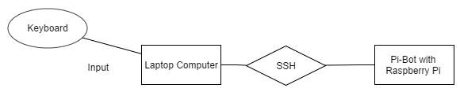
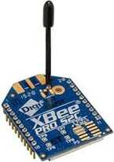
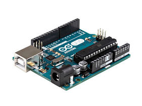
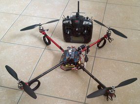
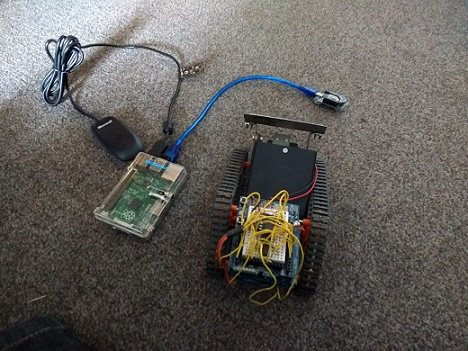
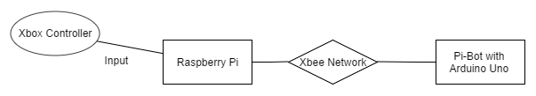
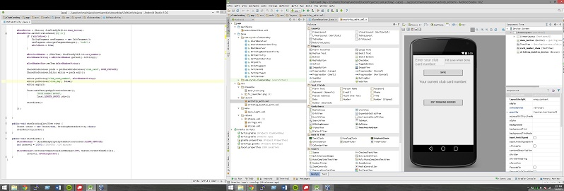

I purchase my own Raspberry Pi 1 Model B, successfully install Raspbian, a lightweight Linux distro, and start learning about GPIO hardware and software. I familiarize myself with basic electronic hobbyist fundamentals (V = IR, PWM, DC Motors, Stepper Motors, Sensors, etc). I also enroll in Codecadamy's Python course, Python being the language of choice when programming the Pi. At this point, getting an LED blinking is a huge accomplishment.
With my new knowledge (and time) I design and create a fully operational wireless treaded-vehicle centered around the Raspberry Pi (commonly referred to as a "Pi-Bot"). I control it with keyboard input from my computer which broadcasts to the Raspberry Pi through Wi-Fi. The Wi-Fi connectivity is excellent, as I can program the vehicle on-the-go via SSH, as well as operate the vehicle anywhere throughout my entire house from my computer, contrast to a typical robot IR receiver, which requires line of sight.
Network and communications diagram
I enter into a Microcontroller and Network Applications directed study led by Dr. Rinker, the Computer Science's department MCU expert. I am part of a team of three who's goal is to transmit flight controls to a quadcopter with wireless communication provided by Xbee transmitters shielded to Arduino Unos, instead of standard remote control (pictured). I complete the tasks of setting up a wireless network between Xbee modules, translating C-code into Arduino C, and writing data packing and unpacking algorithms to prepare them for reception and interpretation. I find that writing code is much easier than piloting a quadcopter.
 Xbee module
 Arduino Uno
A similar quadcopter
I now know how much room for improvement there is with my Pi-Bot. Instead of an on-board Raspberry Pi, I now use an Arduino, which is controlled by the Raspberry Pi through the Xbee network I set up the previous semester. With the Pi as the controller, I implement a neat library I found online, which allows me to use an Xbox 360 controller as the input.
 Picture of hardware
 Network and communications diagram (new)
My bot is now much more mobile (I can leave my house with it), and I free up my Pi to use with other projects. Mechanical improvements are made to the bot, including a bulldozer blade, and articulating wheels to assist in crawling over objects. Photo album here.
Now I am satisfied with my creation, but summer is only half way over. With Siri for the iPhone gaining a lot of popularity, I'm interested in how a computer understands and processes human language. I find a project currently in development, called Jasper. Jasper is great not only because it is built for the Raspberry Pi and is written in my now fluent Python, but also shares a name with my beloved cat. At the time, Jasper provided a skeleton layout for a question and answer Artificial Intelligence, very similar to Siri. However, it is limited in many ways. The questions it can answer are few, the speech output sounds like Microsoft Sam from 2001, and there was almost no personalization, a huge part of Siri's popularity. I purchase a good microphone, and extend Jasper with intelligent query processing algorithms, accurate speech-to-text conversion through AT&T's API, and realistic text-to-speech output with Google's services. You can view the changes I made on Github.
A brief introduction to Java during Programming Languages my sophomore year sparked my interest in that particular language. I know it is a powerful and popular language, and I want to be fluent. I see a post exclaiming that the latest version of Android Studio had just been released, and I know this is the time to get involved. I purchase Android Programming: The Big Nerd Ranch Guide based off of good reviews on Amazon.com, and start working through it. The idea I have is an application that alerts you via push notification when your club card is drawn at my local favorite bar. This can be accomplished because the card numbers are drawn and then posted on the bar's Twitter page (the problem is that if your not diligent about checking your Twitter, you could easily miss it). While creating the user-interface is relatively easy, getting the application to behave correctly at the system level presents quite a challenge. The whole premise of the app is a one-and-done method of simply entering you and your friends club card numbers, and then forgetting about it until the app alerted you. I face issues including making sure the app continued to run after the user exited the application, and at regularly scheduled intervals. The application also has to start when the device booted, so if you restart your phone the application would continue to function as expected. Luckily Twitter has a great API, and so ripping the numbers from the Twitter Feed is not too difficult. I also get some real-world experience using regular expressions to parse the numbers from any other irrelevant information that might be included in the tweet. As break is wrapping up, I have just enough time to look into concurrent processes on the Android OS, and am able to minimize the resources the application requires. I go back to school with my app installed... and lo and behold a few weeks later the push notification showed up: "Congratulations! It's your club card day!". I check the twitter page to confirm, and there is my number! Verifying the functionality of the app was awesome, and the icing on the cake was me heading down to the bar to collect my free drinks!
 Screen shot of the App in development
I am enrolled in Software Engineering, and am pleasantly surprised to learn our semester project is a 2-dimensional dungeon-crawling RPG, to be written in Java! It appears my efforts over winter break have paid off. I easily contribute my share of the project, and learn a lot about github and version control. I am also enrolled in Introduction to Game Development, where I am able to use my experience with Android to port my final project, a video game similar to Galaga, over to my phone. Based off my classmates presentations, I believe I am the only one to install their game on a mobile operating system.